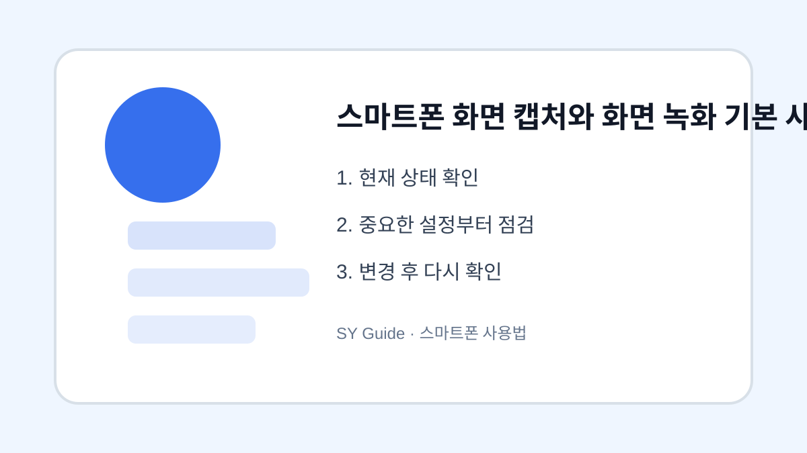

스마트폰 화면 캡처와 화면 녹화 기본 사용법
화면 캡처와 녹화를 사용할 때 저장 위치, 소리, 개인정보 노출을 함께 확인합니다.

화면 캡처와 화면 녹화는 문의 내용을 설명하거나 가족에게 사용법을 알려줄 때 유용합니다. 하지만 화면 안에 전화번호, 계좌, 주소, 알림 내용이 함께 찍힐 수 있어 주의가 필요합니다. 사용법뿐 아니라 공유 전 확인 습관이 중요합니다.
캡처 전 화면 정리
캡처하기 전 알림창을 닫고 개인정보가 보이는 부분이 없는지 확인합니다. 금융 앱이나 본인인증 화면은 캡처가 제한될 수 있으며, 보안상 공유하지 않는 것이 좋습니다. 필요한 부분만 자르기 기능으로 정리하면 안전합니다.
화면 녹화 소리 설정
화면 녹화는 기기 소리와 마이크 소리가 함께 들어갈 수 있습니다. 설명 영상을 만들 때는 마이크를 켜고, 단순 오류 화면 기록은 소리를 끄는 편이 좋습니다. 녹화 후에는 영상 길이와 용량도 확인합니다.
| 기능 | 용도 | 주의점 |
|---|---|---|
| 화면 캡처 | 짧은 안내 | 개인정보 가리기 |
| 화면 녹화 | 과정 설명 | 소리 설정 확인 |
| 자르기 | 필요 부분만 공유 | 원본 보관 주의 |
설정을 바꾸기 전 마지막 확인
- 알림과 개인정보가 보이지 않는지 확인하기
- 캡처 후 필요한 부분만 자르기
- 녹화 전 마이크 소리 설정 확인하기
- 공유 전 파일 용량과 내용 다시 보기
- 민감한 화면은 캡처하지 않기
캡처와 녹화는 편리하지만 작은 정보가 그대로 남을 수 있습니다. 공유 전에 한 번 더 보는 습관만으로도 실수를 줄일 수 있습니다.
화면 캡처와 녹화가 필요한 상황
문제 화면을 설명하거나 예약 정보를 저장할 때 캡처와 화면 녹화는 유용합니다. 다만 알림, 연락처, 결제 정보가 함께 찍힐 수 있어 공유 전에는 민감한 부분을 가리는 과정이 필요합니다.
화면 기록 공유 때 흔한 실수
녹화 중 알림 배너가 떠서 개인정보가 함께 저장되는 경우가 많습니다. 녹화 전 방해금지 모드를 켜고, 공유 전에는 갤러리에서 처음과 끝부분을 잘라 확인하는 것이 좋습니다.
화면 캡처와 녹화 설정을 먼저 확인해야 하는 이유
캡처와 녹화는 문제 상황을 설명할 때 유용하지만, 알림 배너나 연락처, 결제 정보가 함께 저장될 수 있습니다. 공유할 목적이라면 녹화 전 방해금지 모드를 켜고 필요한 화면만 짧게 기록하는 편이 좋습니다.
화면 기록 공유에서 자주 생기는 실수
녹화가 끝난 뒤 바로 보내면 상단 알림, 계정 이름, 위치 정보가 그대로 노출될 수 있습니다. 갤러리에서 처음과 끝을 잘라내고 민감한 부분은 가린 뒤 공유해야 안전합니다.
화면 기록을 보관할 때 다시 볼 부분
상담이나 오류 신고용으로 보관하는 파일은 필요가 끝나면 삭제하는 것이 좋습니다. 가족이나 업무 대화가 포함된 영상은 클라우드 자동 백업 여부도 확인해 불필요하게 남지 않도록 관리합니다.